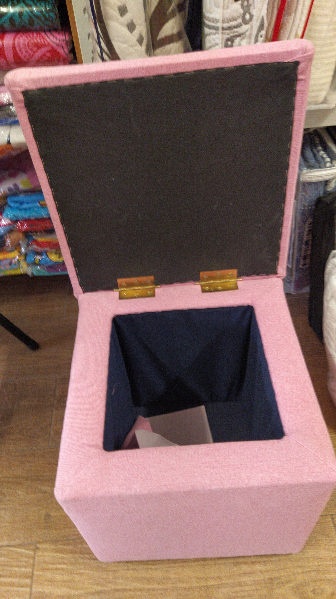
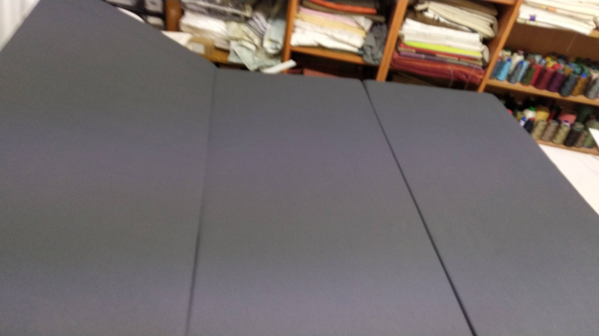

Tapiceria
Tejidos interiores y exteriores, impermeables, repelentes y nauticos.
Que ofrecemos
Renovamos sofas, butacas, sillas y cabeceros con una seleccion de tejidos orientada a uso real, estetica y mantenimiento. La tapiceria a medida permite actualizar piezas sin perder su estructura original.
Asesoramos en texturas, resistencia al roce y comportamiento frente a manchas para que el resultado sea bonito y duradero.
Proceso de trabajo
Revisamos bastidor, espumados y patronaje antes de retapizar. Reforzamos donde hace falta y cerramos costuras y vivos para un acabado limpio y resistente.
Galeria de tapiceria a medida



